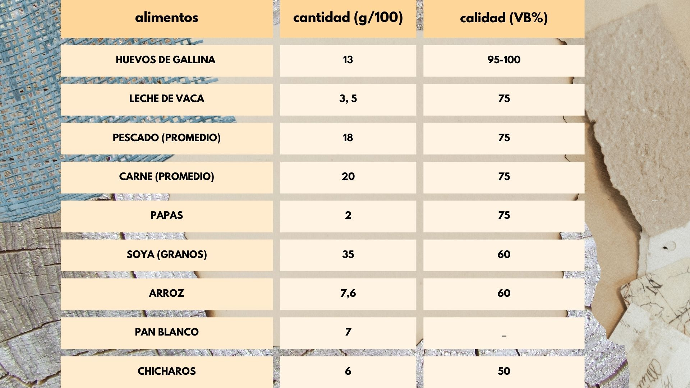
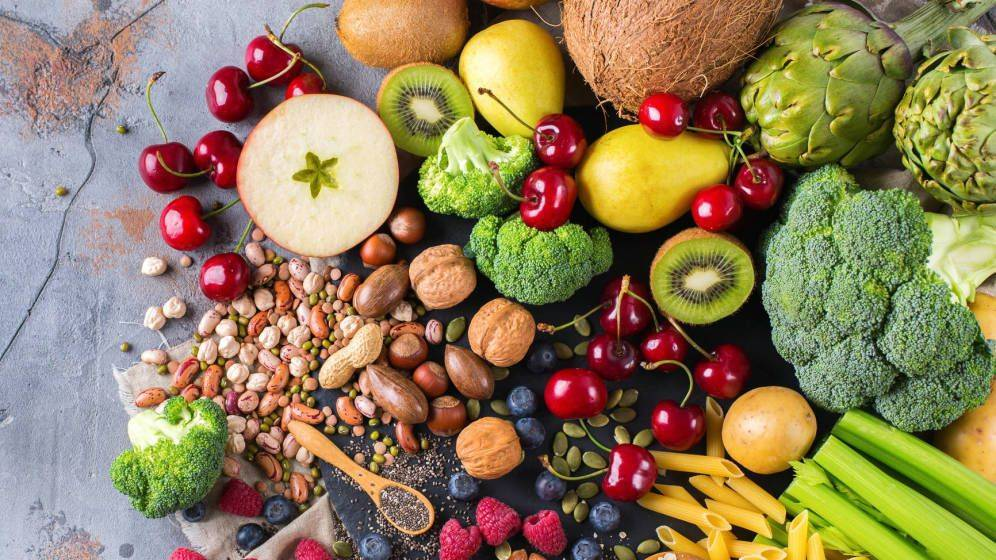
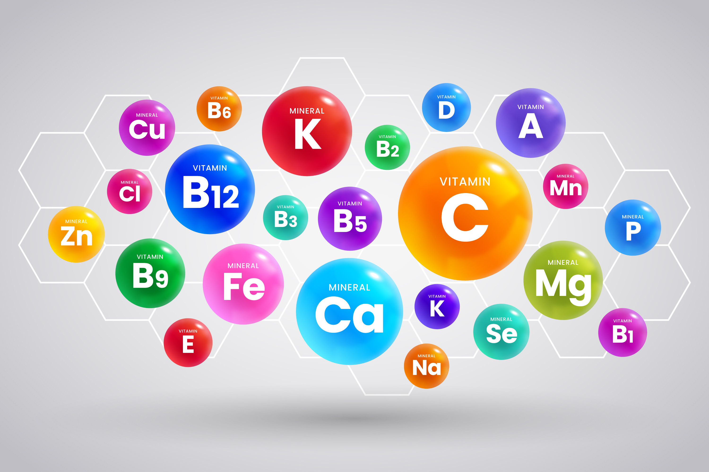

BIOMOLÉCULAS
¿Qué es una biomolécula?
Una biomolécula es un compuesto químico que se encuentra en los organismos vivos y es esencial para uno o más procesos biológicos. Estas moléculas están compuestas principalmente por carbono, hidrógeno, oxígeno, nitrógeno, azufre y fósforo
PROTEINAS
Son complejas sustancias orgánicas nitrogenadas, que constituyen esencialmente el protoplasma de las células tanto animales como vegetales, y tienen un papel fundamental en su estructura y función.
Tabla sobre alimentos y la cantidad de proteina que tienen con su valor biológico:
Valor biológico (VB): representa la proporción de nitrógeno absorbido y que es retenido por el organismo para ser utilizado como elemento de crecimiento o de mantenimiento.
CARBOHIDRATOS O AZÚCARES
Constituyen la mayor fuente de energía en la alimentación humana. Son compuestos orgánicos, formados por carbono, hidrógeno y oxígeno.
Casi todos los alimentos vegetales, excepto los aceites, contienen carbohidratos en mayor o menor proporción. Los carbohidratos son poco abundantes en los alimentos de origen animal, excepto en la caso de la leche, que contiene de 35 a 40 g de lactosa por litro. Los vegetales, son nuestra fuente principal de carbohidratos:
- Sacarosa, en la caña de azúcar, las verduras y las frutas.
- Fructosa, en la frutas y en la miel.
Almidón, en los cereales, legumbres y tubérculos

LÍPIDOS
Las grasas son sustancias de composición química extremadamente variable. Tienen la particularidad de ser insolubles en el agua y solubles disolventes orgánicos como éter, cloroformo, etc. En su estructura molecular se encuentran casi exclusivamente C, H y O, aunque existen formas más complejas. Son nutrientes básicamente energéticos aunque también cumplen otras funciones. Su consumo excesivo puede ocasionar obesidad y se halla relacionado con la génesis de algunas enfermedades, principalmente la aterosclerosis y sus complicaciones.

Vitaminas
Las vitaminas son sustancias orgánicas que no participan en la construcción de las células, pero que son consideradas nutrimentos, ello se debe a que el organismo humano las precisa en pequeñas cantidades para así poder aprovechar otros nutrientes, a veces participando en reacciones metabólicas específicas, otras como metabolito esencial y otras como coenzima.
Minerales
Las sales minerales son pequeñas partículas de distintos minerales necesarias para nuestro organismo que se encuentran dentro de los micronutrimentos. Las sales minerales, al igual que las vitaminas, tienen una función plástica para el cuerpo humano (reparan y mantienen la piel y los tejidos de los órganos).
Fibra
La fibra vegetal es la parte no digerible ni absorbible de muchos alimentos de origen vegetal. Está constituida por sustancias de distinta composición química, aunque la mayor parte de ellas son polisacáridos. También se denomina fibra dietética y fibra alimentaria. A pesar de que se podría considerar un componente poco útil, ya que se elimina en las heces.

Agua
El agua desde el punto de vista químico, es una sustancia inorgánica compuesta por Hidrógeno y Oxígeno (H2O). Por ser esencial para la vida humana, es considerada un nutrimento y como tal la encontramos en la composición de todos los alimentos que tomamos, excepto el aceite, aunque evidentemente, en muy diferentes proporciones. El agua como nutrimento no es energética, no aporta calorías a nuestro organismo al igual que las vitaminas y los minerales. El agua, en condiciones naturales, no es H2O como la hemos descrito, sino que contiene gases, CO2, sulfato de Ca, ciertos cloruros, sales de Mg, Fe, Cu, en algunos casos azufres, etc. Según los terrenos donde circula. Puede contener también derivados orgánicos procedentes de las capas biológicas, vegetales o animales, de la tierra.